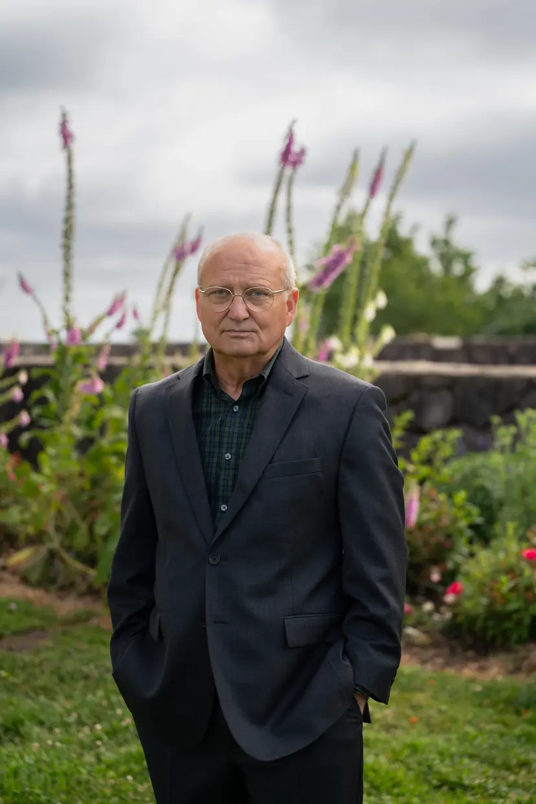

Oregon House District 28 • 2026 Voter Guide
Randall Fryer vs. Dacia Grayber
One Wants Government to Live Within Your Budget. The Other Has a Record of Asking Taxpayers for More.
Look at the Record. Decide Who Deserves Your Vote.
Hillsdale • Multnomah Village • Raleigh Hills • Garden Home • SW Portland • PSU • OHSU

General Election • November 3, 2026
Randall Fryer
Randall Fryer is a retired physician who trained in family medicine and later spent years staffing rural and remote emergency departments.[1]
Before medicine, Fryer worked in Fortune 500 software. He also served as an Army medical corpsman and received an honorable discharge.[1]
He’s not a career politician. His argument to District 28 is straightforward:
Fryer believes the people paying the bills should help set the limits.
Dacia Grayber
Grayber has served in the Oregon Legislature since 2021, first representing HD35 and then HD28 following redistricting.[4]
She is a professional firefighter-paramedic and chairs the House Labor and Workforce Development Committee.[2][4]
But an incumbent isn’t judged only by a résumé.
An incumbent comes with receipts. Grayber’s record includes:
The Incumbent Test
District 28 doesn’t have to guess how Grayber would govern. It can examine how she already has.
Side by Side
The candidates begin from substantially different assumptions about what state government should do and how it should pay for those responsibilities.
| Issue | Randall Fryer | Dacia Grayber |
|---|---|---|
| Taxes | Tie taxes to what median-income Oregonians can actually carry.[1] | Voted Yes on HB 3991, which included doubling the statewide transit payroll tax from 0.1% to 0.2%.[3] |
| Transportation | Prioritize the roads and bridges people actually use. Require direct voter approval before highway tolling. | Supports public transportation and climate-focused infrastructure and voted for HB 3991. |
| Schools | Reading. Writing. Math. Critical reasoning. High standards. Teacher judgment. | Calls for redefining what is possible in education funding and greater investment. |
| Government Programs | Ask whether programs work before taxpayers are asked for another check. | Chief-sponsored a $5 million firefighter-apprenticeship pilot that later received additional funding while evaluation/reporting timelines remained outstanding. |
| Healthcare | A retired physician who has delivered care in family practice and rural and remote emergency departments. | Campaign position: “Health care is a human right.” |
The Question Voters Face
One side asks Salem for more. Fryer asks to see the receipt first.
Taxes & Transportation
In 2025, the Oregon Legislature passed HB 3991 with a $4.3 billion transportation package that increased or added transportation-related taxes and fees.[3]
Among its provisions was an increase in the statewide transit payroll tax from 0.1% to 0.2%. Measure 120 also included a six-cent gas-tax increase and higher vehicle registration/title fees.
Yes
Grayber’s vote on HB 3991[3]
83%
Oregon voters who rejected Measure 120
$4.3B
Transportation-tax package passed by the Legislature
Then Oregon voters got their say.
More than 83% rejected Measure 120.
The rejection was so decisive that OPB described the result as a blunt message to state leaders to find another way to fund transportation.
Dacia Grayber
Her campaign also supports climate-resilient, carbon-neutral infrastructure and public-transportation projects.
But after an 83–17 rejection, voters have already sent Salem a message about this transportation tax package.
Randall Fryer
Fryer’s position:
The people paying the bill should help set the limit.
Schools
Portland Public Schools has been serving fewer students. At the same time, compensation and PERS costs have risen and the district has faced repeated rounds of cuts.
In 2023, a letter from 16 Democratic legislators questioned how much PPS spending was reaching classrooms vs administration.
PPS disputed that framing. But enrollment continued falling and budget pressure continued.
Randall Fryer
Fryer emphasizes:
His position is that academic fundamentals should remain central and that school funding should not place excessive pressure on median-income households.
Dacia Grayber
Grayber calls for greater investment in education and has argued that Oregon should rethink what is possible in school funding.[2]
Question for Voters
Should the next priority be additional investment, stronger academic focus, or some combination of both?
Government Programs
Grayber’s firefighter background is real. So is her legislative record.
Grayber was a chief sponsor of HB 2294, which created a BOLI pilot program providing grants for firefighter apprenticeship training.[3][5] The bill became law in 2023.
The records highlight $5 million for the original program, additional subsequent funding, and a required effectiveness-reporting timeline. It also identifies separate firefighter-apprenticeship spending through the Oregon State Fire Marshal.[6]
The concern isn’t firefighter training.
Firefighters need a strong pipeline.
The concern is whether government should expand spending before taxpayers see the results of what they already funded.
Randall Fryer
Fryer spent years working in emergency departments where resources were limited and decisions had consequences.
His approach is:
Measure first. Prove it works. Then decide whether taxpayers should spend more.
Dacia Grayber
Her approach on the apprenticeship program raises a different question:
Why expand a government program before its required evaluation tells taxpayers whether the original investment worked?
“A worthy cause does not eliminate the need for accountability.”
Healthcare
House District 28 includes OHSU and a large number of healthcare professionals and professional households.
Randall Fryer
Fryer practiced family medicine before working in rural and remote emergency departments.[1]
His background gives him direct experience with staffing, patient demand, resource limits, and healthcare delivery.
His broader tax position emphasizes what median-income Oregonians can afford.
Dacia Grayber
Grayber’s campaign says:
“Health care is a human right.”
But when it comes to the bills, doctors still have to be paid. Hospitals still have to operate. Medication still has to be purchased. Government still has to raise the money.
By declaring something a right doesn’t make its cost disappear.
The Financing Question
The danger is promising more healthcare spending without being equally clear about who ultimately pays for it.
Transportation
Transportation is one of the clearest differences between the candidates.
Randall Fryer
Fryer emphasizes:
Dacia Grayber
Grayber supports:
Question for Voters
What balance should Oregon strike between roads, public transit, climate goals, and direct voter control over tolling?
The Incumbent Test
| Area | Grayber’s Legislative Record |
|---|---|
| Transportation | A Yes vote on HB 3991.[3] |
| Education | Support for greater education investment. |
| Workforce Development | Chief sponsorship of the firefighter-apprenticeship program.[3][5] |
| Healthcare | Support for expanded healthcare access. |
| Infrastructure | Support for climate-focused transportation investment.[2] |
That’s precisely his argument.
He isn’t asking voters to reward another legislative résumé. He’s asking them to change the standard:
Which approach better matches your expectations for House District 28?
The Decision
Randall Fryer
His priorities are:
The Decision Belongs To You
Information and candidate positions current as of September 9, 2026. See Sources & References for details.
HD28
Information and candidate positions current as of September 9, 2026. Candidate positions, campaign materials, websites and policy proposals may change after publication. Readers are encouraged to review the cited sources and current candidate materials for the most recent information.
Presented by Northwest Oregon PAC
Paid for by Randall Fryer For Representative